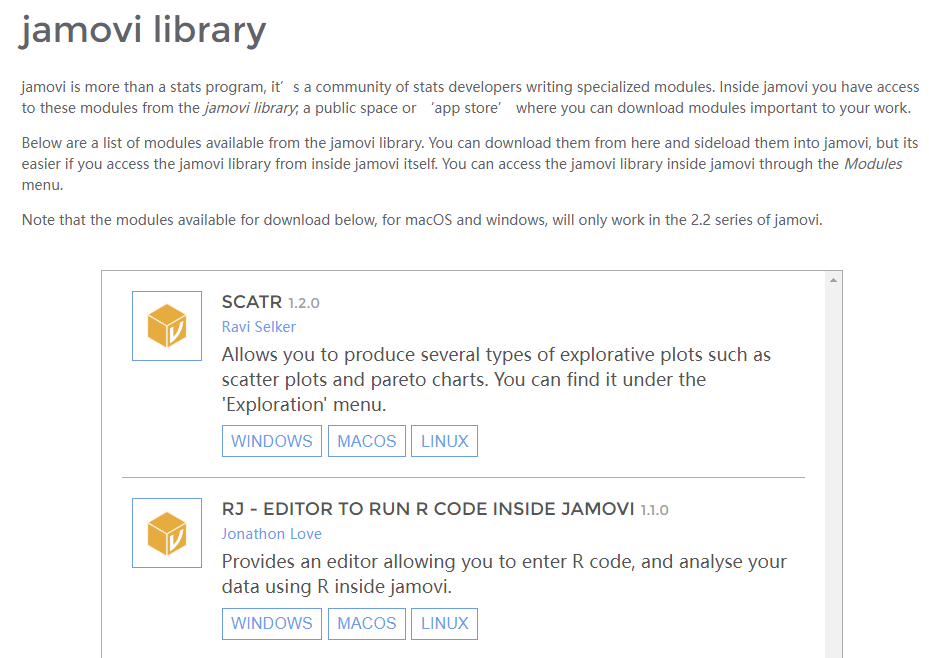

推荐一个适合临床医生的统计软件-Jamovi
2022年3月6日

今天，我想给大家推荐一款统计软件，如果你是一名临床医生，如果你不太懂编程，不会使用R或SAS，如果你嫌SPSS菜单太复杂，那么你一定要看完这篇文章。
我想要推荐的统计软件名称是jamovi，它是一种新的第三代统计软件，易于使用，免费开源，灵活安装模块，可以集成R语言等这些特征是笔者推荐的主要理由，下面我们来了解下具体内容。
1 免费、开源
目前一些比较流行的统计软件比如SAS、SPSS、Stata等都是需要付费的，而免费的R语言则需要使用者具备一些编程能力，使用门槛比较高。而jamovi的出现刚好填补了免费且易于使用的市场缺口，同时也给使用者带来了福利。
2 多平台使用
jamovi能够在windows、macOS、Linux和ChromeOS上使用，可以说是全平台通用哈，不管你用的什么设备，都可以用了。
3 友好的操作界面
Jamovi的操作界面与SPSS类似，直观易懂、操作便利。使用jamovi对数据进行统计分析，只需要通过选择菜单、填写对话框和点击按钮等简单操作即可完成，免去了复杂的程序编辑环节。分析过程中，不仅可以同步得到标准数字表格，还可产生美观、高清的统计图；而且，所得图表均可便捷地导出或复制、粘贴。此外，jamovi可以实现数据的实时编辑与管理，相应的统计分析结果也会在输出窗口及时更新，极大地提高了工作效率。
4 灵活安装模块，避免“模块灾难”
Jamovi软件具有可扩充性，主菜单栏包含了常用的统计分析模块，若想实现更多的统计分析如元分析、功效分析、中介与调节模型分析、贝叶斯方法等可通过加载模块(Modules)的方式实现方法扩充，这种方式很好的规避了过多的模块使得主菜单或模块列表里过于拥挤而造成分析模块选择和操作的不便。 
5 集成R的庞大功能
Jamovi是基于R语言开发的，可以与R软件无缝对接，加载Rj模块后，可通过Rj Editor实现所有R软件的数据处理功能。
6 软件下载
点击此处下载Jamovi，快把jamovi安装到电脑上试着用用吧，反正也不要钱。
7 官方博客
官方blog，没事儿来这里逛逛，看看有哪些新的功能出现！
8 小结
Jamovi软件开源免费、易于使用、能扩展功能、能集成R语言实现R的所有功能，有以上这些理由，值得你来试试！